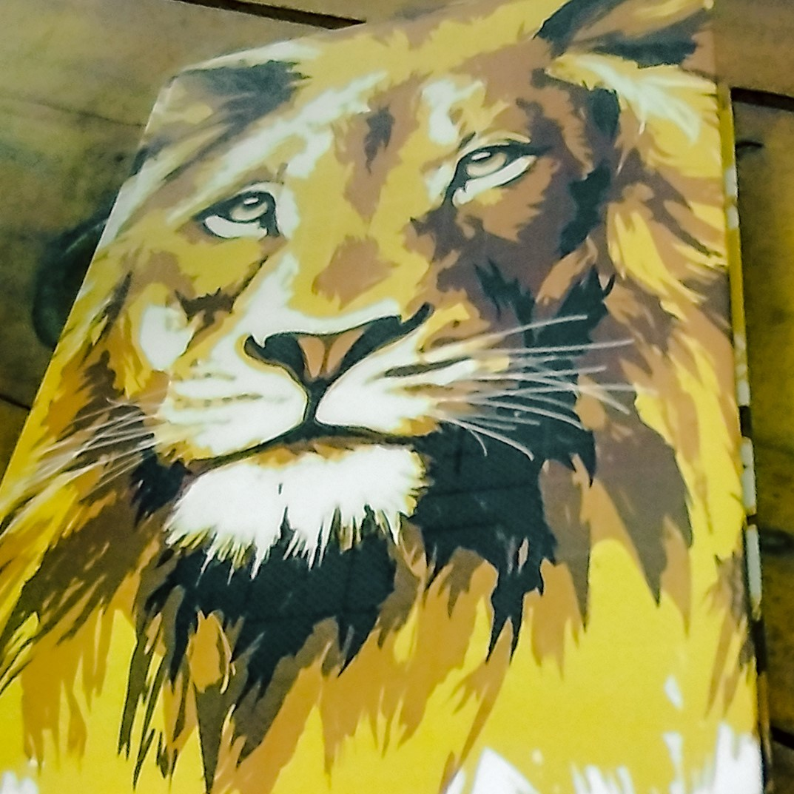

A mais de 20 anos Propagando o Evangelho do Rei Jesus
E ao anjo da igreja que está em Filadélfia escreve: Isto diz o que o Santo, o que é verdadeiro, o que tem a chave de Davi, o que abre, e ninguém fecha, e fecha, e ninguém abre.
Apocalípse 3:7
Cultos Semanais
- Quartas e Sextas das 19h às 20h30.
- Domingos das 18h às 19h30.
R. Odílio Figueiredo, 102 - Romeirão, Juazeiro do Norte - CE
